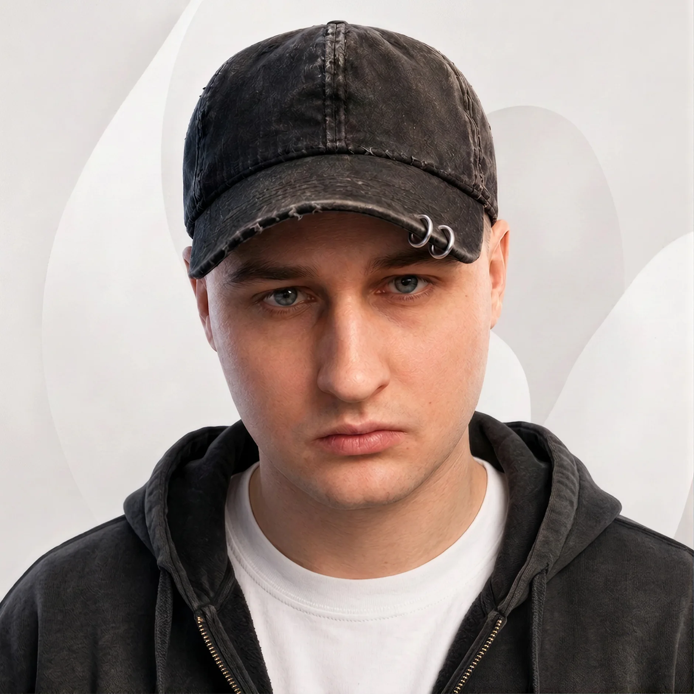

01 / Диагностика
Как понять, за какую ошибку браться первой
Разделил замечания по важности и добавил фильтры. В каждой строке видно, что именно не так и на какой странице. Из списка можно перейти к исправлению.

SEO/GEO-платформа TelegramUX/UI · B2B SaaS · Web
Проект под NDAСервис для маркетологов и SEO-специалистов
Спроектировал кабинет, в котором можно проверить сайт, узнать, упоминают ли компанию нейросети, и разобраться, что стоит исправить в первую очередь.
О проекте
На старте у меня был только неработающий прототип: одна страница со сплошным текстом о том, что на сайте хорошо, а что плохо. Ни рекомендаций, ни объяснений, зачем что-то менять, ни дальнейших действий в нём не было. По сути, это был отчёт, а не сервис для работы. Других материалов у меня не было.
Я превратил этот отчёт в полноценный сервис: самостоятельно разобрался в логике продукта, продумал разделы, рекомендации и пользовательский путь. Хотел, чтобы человек мог без дополнительных объяснений понять, с чего начать, что исправить и как проверить результат. После этого собрал экраны и UI Kit.
Маркетологам и SEO-специалистам, которые следят за продвижением компании. Им важно видеть технические проблемы сайта, сравнивать себя с конкурентами и проверять упоминания в ответах нейросетей.
Не просто сделать отчёт удобнее для чтения, а спроектировать работу после его получения. Объяснить, к чему относится каждая проблема, зачем её исправлять и какие действия для этого нужны.
Пользовательский путь и структуру сервиса я выстраивал с нуля. В исходнике их не было. Моя работа включала и логику взаимодействия, и оформление интерфейса, и общие компоненты для экранов.
Как устроена работа с задачей
Разберу на примере страницы, закрытой от индексации. Недостаточно сообщить об ошибке: нужно объяснить, где она находится, как её исправить и как проверить результат.
На главном экране видны самые важные проблемы. Отсюда можно сразу открыть задачу.
Внутри указаны адрес страницы, причина ошибки и порядок исправления.
После правок на сайте пользователь отмечает задачу. Она переходит в ожидание проверки.
Сервис проверяет страницу ещё раз. Если ошибка осталась, задача возвращается в работу.
Я собрал здесь адрес страницы, описание ошибки и инструкцию. Так можно заняться исправлением, не возвращаясь к общему отчёту.
Я разделил ручную отметку и проверку сервиса: пользователь мог внести правки, но ошибка на сайте могла остаться.
Другие экраны
В этих разделах решаются разные задачи, поэтому и данные я организовал по-разному. В аудите важна срочность ошибки, в аналитике AI нужно понимать, откуда взялся показатель.
Разделил замечания по важности и добавил фильтры. В каждой строке видно, что именно не так и на какой странице. Из списка можно перейти к исправлению.
Один процент мало что говорит. Поэтому рядом я показал, сколько ответов проверено, за какой период и в каких сервисах. Ниже можно сравнить результаты по каждому источнику.
UI Kit
В кабинете часто повторяются кнопки, поля и таблицы. Собрал их в библиотеку Figma, настроил стили и состояния. Это помогает поддерживать одинаковое оформление при добавлении новых экранов.
Шрифт и размерыВо всём кабинете использую Inter Tight. Для заголовков страниц выбрал 32 px с интерлиньяжем 40 px, для основного текста 14/20.
Состояния элементовПроработал, как выглядят наведение, нажатие, фокус, загрузка и недоступное действие. У статусов есть подписи, чтобы их можно было понять не только по цвету.
Компоненты в FigmaПовторяющиеся элементы связаны с библиотекой. Если нужно изменить кнопку или поле, правка применяется к их экземплярам в макетах.
Выделил основные и вторичные действия, отдельно оформил удаление. Подготовил варианты высотой 36 и 44 px, в том числе с загрузкой и фокусом.
Результат
Сервисом стали активно пользоваться маркетологи. Интерес оказался настолько большим, что компания сделала его своим основным направлением.
Я отвечал за интерфейс: как устроены разделы, как пользователь работает с задачами и как всё это выглядит. Популярность сервиса не могу приписать только дизайну, над продуктом работала команда.
Точные показатели не раскрываю. На этой странице показана версия макетов для портфолио, она отличается от текущего продукта.
Связаться со мной